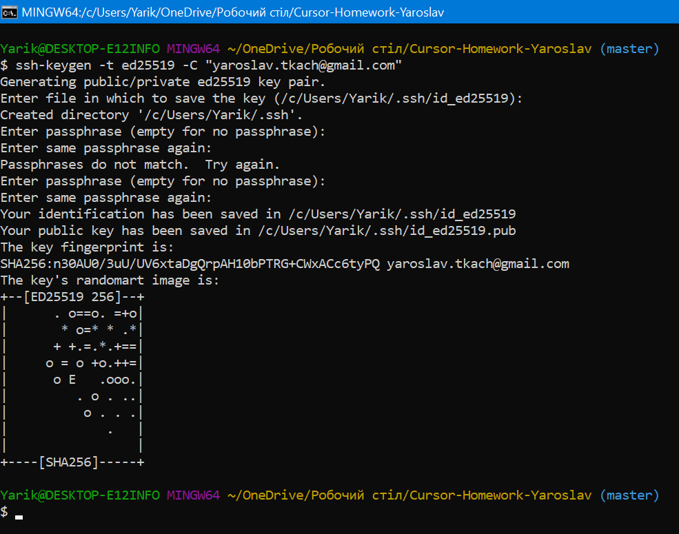
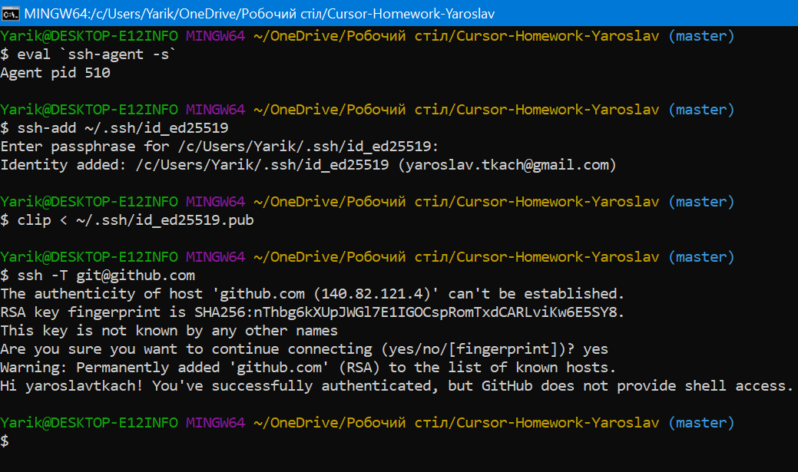

 Base
config --global user.name blabla - Устанавливает имя, которое будет отображаться в поле автора у выполняемых вами коммитов git config --global user.email blabal@bla - Устанавливает адрес электронной почты, который будет отображаться в информации о выполняемых вами коммитах git init - Создаёт новый локальный репозиторий git status - Перечисляет все новые или изменённые файлы, которые нуждаются в фиксации git add - Индексирует указанный файл для последующего коммита git commit - Фиксирует проиндексированные изменения и сохраняет их в историю версий git log - История коммитов для текущей ветки git checkout - Переключается на выбранную ветку и обновляет рабочую директорию до её состояния git branch - Список именованных веток коммитов с указанием выбранной ветки git push - Загружает все изменения локальной ветки в удалённый репозиторий git pull - Загружает историю из удалённого репозитория и объединяет её с локальной git merge - Вносит изменения указанной ветки в текущую ветку git clone - Скачивает репозиторий вместе со всей его историей изменений gitignore - Файл в который добавляют файлы и директории, которые будет игнорировать Git
Advanced
git revert - Откатывает коммит путём создания нового, изменения в котором обратны тому коммиту, который нужно отменить git reset - Отменяет индексацию указанного файла, при этом сохраняет его содержимое git rebase - Один из способов объединить изменения, сделанные в одной ветке, с другой веткой git cherry-pick - Переносит отдельные Коммиты с одного места хранилища в другое git stash - Временно сохраняет все незафиксированные изменения отслеживаемых файлов